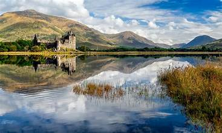
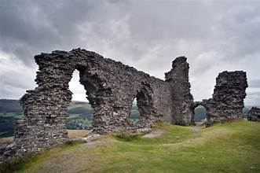

The Magic of the Scottish Highlands
From London, we headed north to the breathtaking Scottish Highlands. The rugged mountains, deep lochs, and ancient castles left us in awe. We embarked on a scenic road trip along the North Coast 500, one of the most beautiful routes in the world, and encountered friendly locals in picturesque villages.

Wales: A Land of Legends
Our journey continued to Wales, where we delved into Celtic myths and legends. We explored the enchanting Snowdonia National Park, hiked to the summit of Mount Snowdon, and discovered the history of Conwy Castle. The lush green landscapes of Wales are truly captivating.

Conclusion
Our journey through the United Kingdom was a true adventure, filled with history, natural beauty, and vibrant culture. The UK's diverse regions offer something for every type of traveler, from city explorers to outdoor enthusiasts. It's a destination that will leave you with lasting memories and a desire to return.This featured travel story provides a glimpse into the beauty and diversity of the United Kingdom, showcasing some of its most renowned destinations. You can expand on this story by adding more details, personal experiences, and photos to make it even more engaging for your readers.
Read More